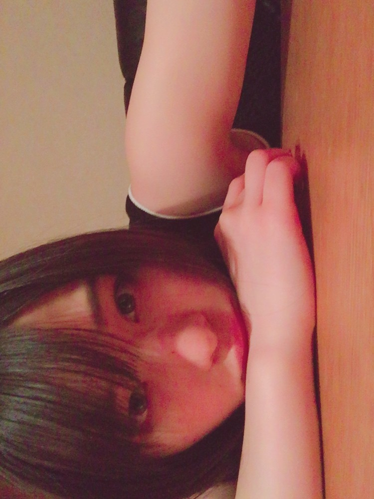
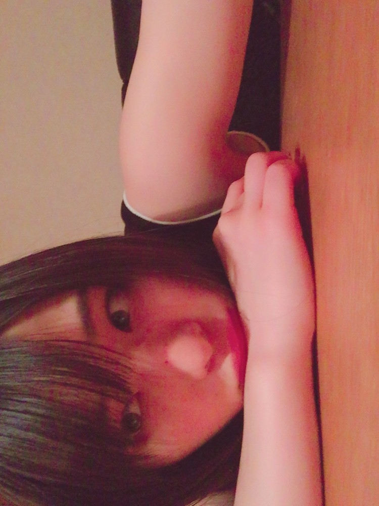
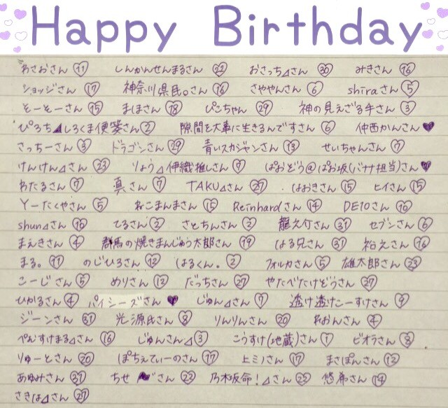

| 2017/03 28 Tue | No Problem_(．．*)vol.172 |
みなさんこんばんはー！
19歳 相楽伊織です！

ここ最近寒くないですかー？
やっと暖かくなってきたと思ったのに。。
桜も散っちゃうよ〜(__)
今年、ピクニックしたいな！
あとバドミントン！
あと最近
バッティングセンターに行ってみたいなーと！！
バッティングセンターって
ドラマとかでよくある
OLさんがストレス発散しに来てる
みたいなことって
本当にあるのかな？
行ってみたものの
野球少年とかできる方しかいなかったら
気が引けるよね。。
~いおり庵~
 最近食べたスイーツは？
最近食べたスイーツは？

ガトーショコラ♡
最近ハマってて
カフェ行ったらだいたい頼む！
でもこの前行ったカフェでは
パンケーキ食べたし
甘いもの見ると
ついつい食べたくなっちゃう(><)
 春服と冬服どっちが好き？
春服と冬服どっちが好き？

んーーーー。
春かな〜(´･ω･｀)
冬は黒ばっかり着てるから
春はカラフルな物を着るの♪
だから私は春の方が楽しいヾ(＠⌒ー⌒＠)ノ
ファッションは
去年くらいから意識し始めて
前まではシンプルイズベストって思ってたけど
可愛い洋服は沢山あるし
ファッション楽しいって思うようになった♪

本当はもう一つくらい
話題書きたかったんだけど、
あ、
この前、｢グランド･ブダペスト･ホテル｣
っていう映画を観たの！
結構前の映画なんですけど、
私はすごい好きな感じでした♪
私、映画の説明とかしても
｢面白かったんだね、(微笑)｣
ってなっちゃって今まで
魅力とか伝えられた事ないから
気になった方は
予告編を観てみてください(。-∀-)
コメディー映画って感じでした♪
あとは｢SING｣を観れば
満足ですヾ(＠⌒ー⌒＠)ノ
3月お誕生日の方
お誕生日おめでとうございます♡

素敵な1年になりますように...♡
 のぎ天2
のぎ天2
 月刊エンタメ 3/30 発売
月刊エンタメ 3/30 発売
よろしくお願いしますm(_ _)m
i o r i .

コメント(355)
2017/03/28 23:35